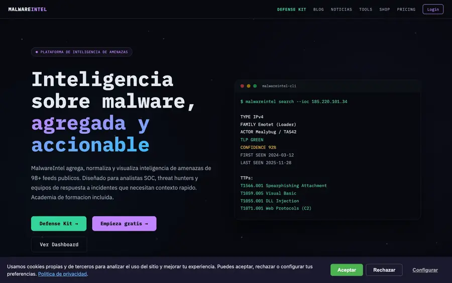
MalwareIntel
En producciónPlataforma CTI gratuita: 4.400+ familias de malware, 2,6M+ IOCs, 3.632 reglas de detección y 218 actores de amenaza. Soberanía UE.
malwareintel.es
Construyo plataformas de ciberseguridad e IA para los equipos que protegen organizaciones. Y, por el camino, webs de divulgación hechas con datos abiertos y material de dominio público.
IAcademyLo que construyo y mantengo en producción: ciberseguridad, inteligencia de amenazas, formación y automatización con IA.

Plataforma CTI gratuita: 4.400+ familias de malware, 2,6M+ IOCs, 3.632 reglas de detección y 218 actores de amenaza. Soberanía UE.
malwareintel.es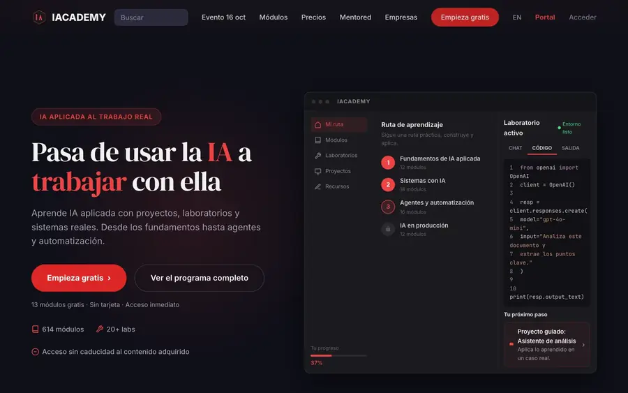
Academy de IA aplicada en español: 614 módulos, especializaciones por profesión, 625 quizzes y 232 artículos. Desde 0 EUR.
iacedemy.com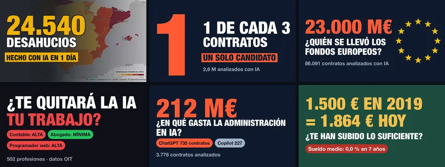
Serie de IAcademy: cada episodio convierte un dataset público oficial en web interactiva, código abierto y vídeo explicativo. 12 episodios.
youtube.com/playlist?list=PLKzUzZp5rK5o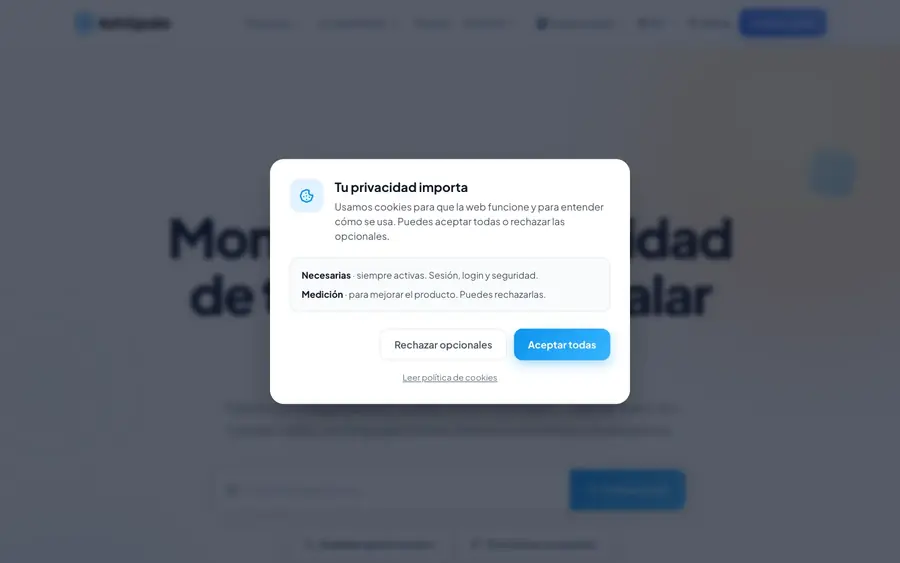
Vigilancia de cumplimiento web: ENS, LSSI, RGPD y accesibilidad monitorizados desde fuera, sin instalar nada, con avisos automáticos.
astropalo.com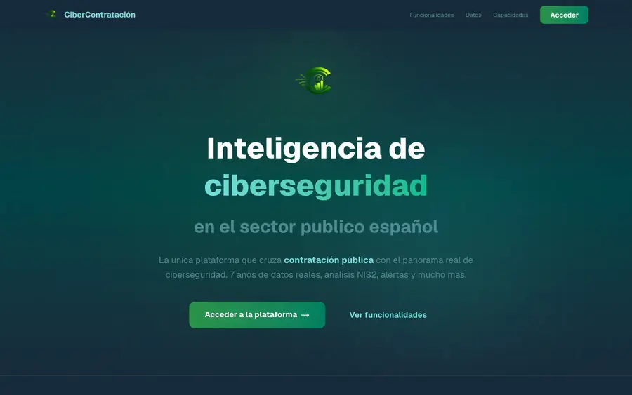
Inteligencia de ciberseguridad en la contratación pública española: 6.008+ licitaciones, 121 organismos, scoring y threat actors.
cibercontratacion.com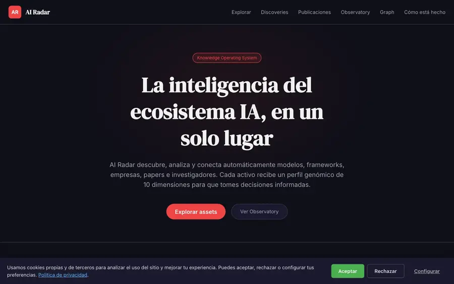
Sistema de conocimiento del ecosistema IA: descubre, analiza y sigue modelos, frameworks, papers y herramientas en tiempo real.
airadar.iacedemy.com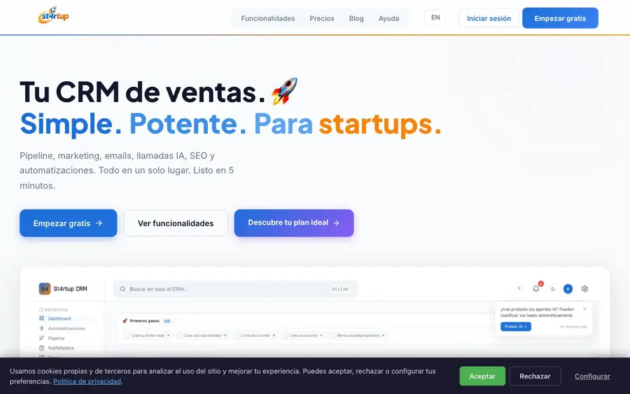
CRM de ventas para startups: pipeline, clientes y seguimiento comercial en un solo sitio.
st4rtup.com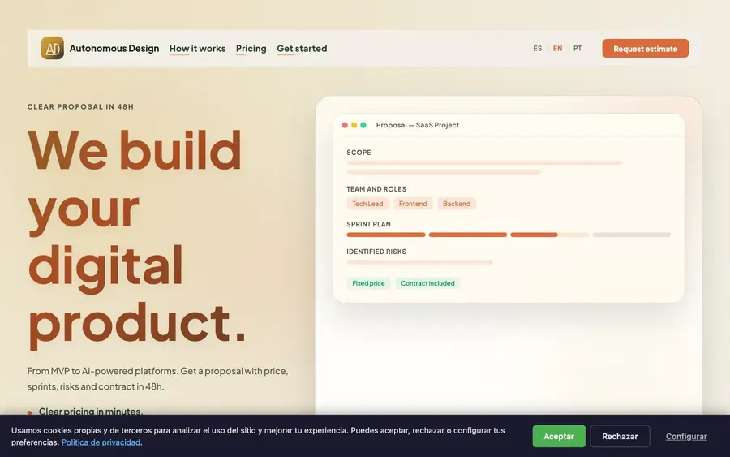
Estudio de producto digital con IA: describes el proyecto y en 48 horas recibes una propuesta con precio, plan de sprints, riesgos y contrato. MVP, plataformas y automatización con agentes de IA, con infraestructura en la UE.
autonomousdesing.com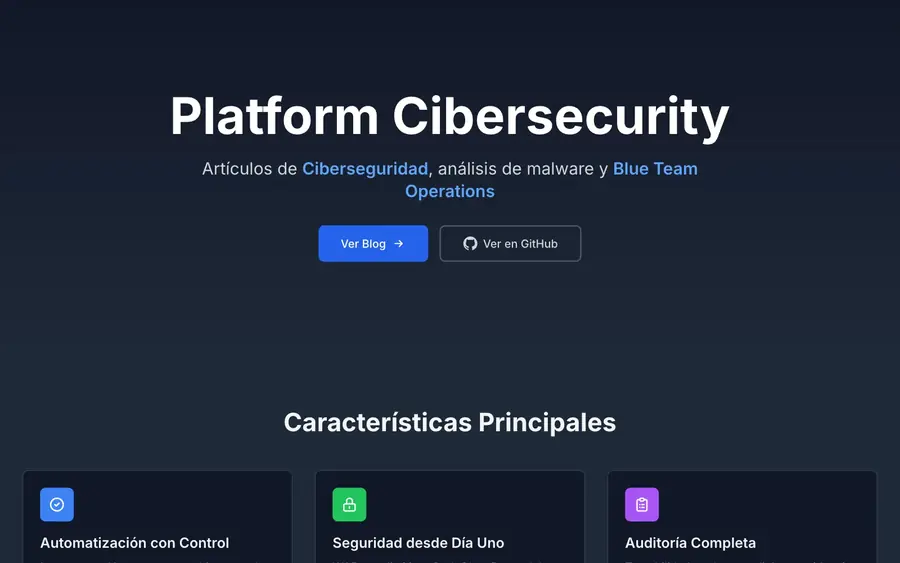
Plataforma autopilotada de artículos técnicos sobre ciberseguridad. Blue Team, análisis de malware, seguridad en APIs y LLMs. HITL workflow.
platform-cibersecurity.net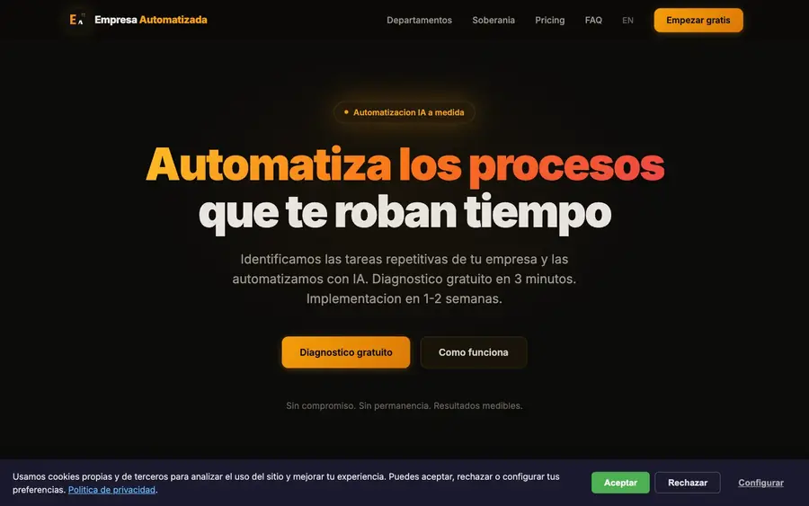
Automatización con IA a medida para empresas: diagnóstico gratuito, implementación en 1-2 semanas y soporte continuo. Sin permanencia.
empresaautomatizada.es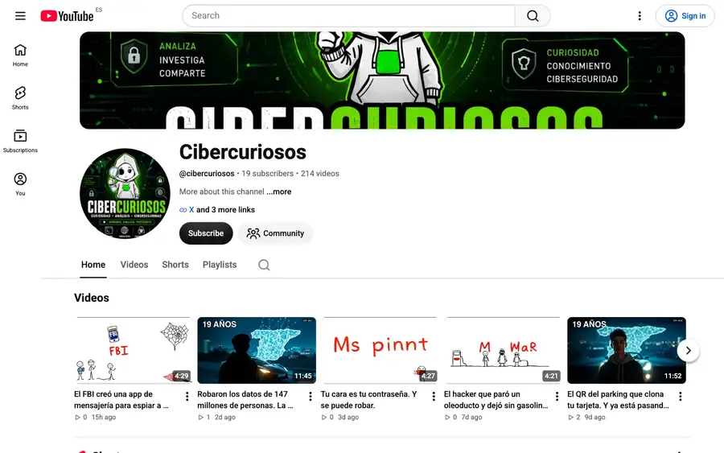
Canal de divulgación de ciberseguridad en YouTube: brechas históricas, CTI y cultura digital en vídeos y shorts semanales.
youtube.com/@cibercuriosos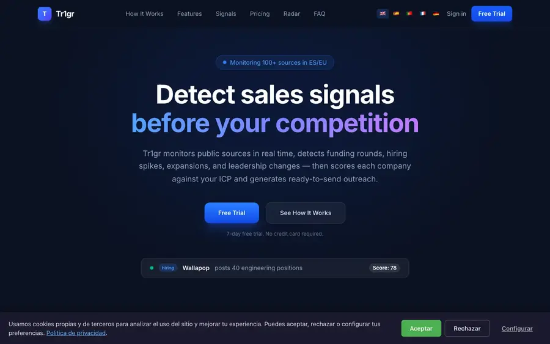
Radar de señales de venta B2B que puntuaba leads con 86 fuentes públicas. Cerrado en agosto de 2026: el mercado estaba saturado y no consiguió tracción.
tr1gr.comDivulgación con datos abiertos y material de dominio público, herramientas de ciberseguridad y experimentos con IA. Todas con su código en GitHub.
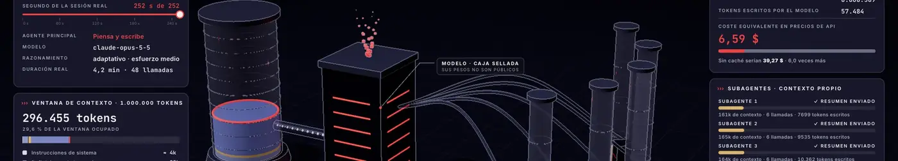
Una pregunta real a Claude Code, por dentro: la ventana de contexto de 1 millón de tokens, el modelo como caja sellada, 5 subagentes en paralelo y las herramientas, reproducidos segundo a segundo desde una sesión real anonimizada. 48 llamadas y 8,8 millones de tokens leídos de caché: 6,59 $ en vez de 39,27 $.
github.com/pedri77/dentro-de-claude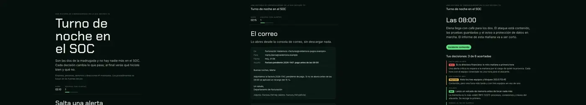
Una historia de ciberseguridad en la que decides tú: son las 02:10, salta una alerta en el portátil de la directora financiera y no hay nadie más en el SOC. Mirar el correo, aislar o apagar, escalar, atender una llamada urgente que dice ser del director general: 19 escenas, 5 finales y, al terminar, el repaso de cada decisión con su porqué (RFC 3227, NIST SP 800-61, RGPD art. 33). Un validador recorre los 243 estados posibles para que ninguna ruta se quede sin salida.
github.com/pedri77/turno-de-noche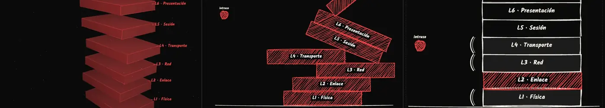
Una kill chain que sube por las siete capas OSI hasta derribar la torre. La portada 3D se despiece con el scroll; después un intruso dibujado a mano dispara un paquete a cada capa, del implante en una roseta al túnel DNS, cada paso con su técnica ATT&CK, su CWE y el control que lo habría parado, y al final la torre se derrumba con física real. Cierra con un juego: tres controles contra un intruso con dos rodeos.
github.com/pedri77/torre-osi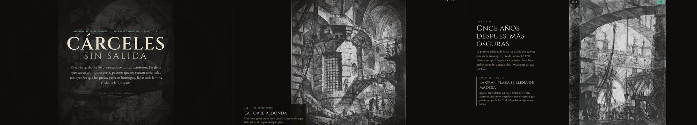
Las dieciséis Carceri d'invenzione de Piranesi (1761) como un descenso sin fin: la cámara entra por un arco o una escalera de cada grabado y dentro ya espera el siguiente, hasta que la última lámina se abre otra vez a la primera. Después, una cortina compara tres planchas de 1750 con las de 1761 alineadas encima (la portada cambia de dueño, la gran plaza se llena de madera) y una cronología sigue su rastro de De Quincey a Eisenstein, Huxley, Yourcenar y Susanna Clarke. Grabados de dominio público de Wikimedia Commons.
github.com/pedri77/piranesi-carceri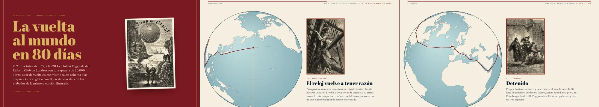
Un globo terráqueo gira con el scroll y sigue a Phileas Fogg por dieciocho escalas, de la apuesta en el Reform Club al tren especial de Liverpool, con los grabados de Neuville y Benett de la edición Hetzel (1873). Arriba, el calendario de Fogg, los días gastados y la hora local respecto a Londres, que llega a doce horas en el meridiano 180°. Después, el día que ganó sin saberlo, De la Tierra a la Luna frente al Apolo 8 y las vueltas al mundo reales, de Nellie Bly a Gagarin. Fechas y cifras sacadas del texto de Verne; grabados de dominio público y foto de la NASA.
github.com/pedri77/verne-80-dias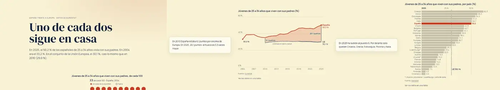
En 2004 vivían con sus padres 33 de cada 100 españoles de 25 a 34 años; en 2025, 50. En la Unión Europea siguen siendo 30. Una historia con datos de Eurostat: cien círculos que se llenan, el hueco entre España y Europa que pasa de 6,1 a 20,1 puntos, los 27 países reordenándose (España sube del puesto 13 al 6) y la edad media a la que nos vamos de casa, con el cambio de método de 2021 marcado. Cada cifra sale de la API de Eurostat con su procedencia, sus datos estimados o provisionales señalados y su tabla.
github.com/pedri77/la-mitad-en-casa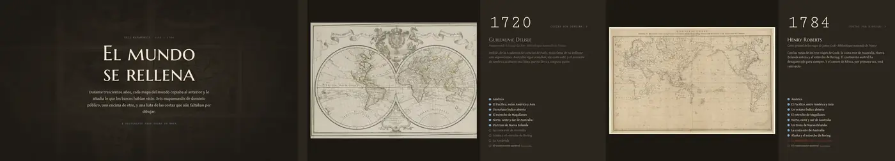
Seis mapamundis de dominio público, de Ptolomeo (1482) a la carta de los viajes de Cook (1784), encendiéndose uno encima de otro en el mismo marco mientras una lista de costas por dibujar se va marcando: América en 1507, Magallanes en 1570, Australia a trozos, Nueva Zelanda, Bering. El continente austral inventado aparece en 1570 y se tacha; la Antártida no llega nunca. Después, California dibujada como isla durante un siglo y los elefantes que, según Swift, los geógrafos ponían en África a falta de ciudades. Mapas de la Library of Congress, la BnF y otras colecciones vía Wikimedia Commons.
github.com/pedri77/mapas-mundo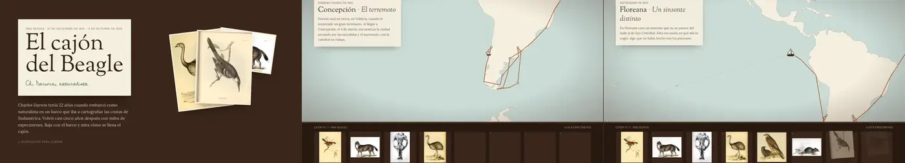
El viaje del Beagle (1831-1836) en un mapa de papel que avanza con el scroll, diecisiete paradas de Plymouth a Falmouth, y abajo un cajón de museo que se llena con lo que Darwin recogió: el lobo de las Malvinas, la calavera de Toxodon comprada por dieciocho peniques, el ñandú que se comieron antes de saber qué era, el sinsonte de Floreana. Después, los sinsontes de Galápagos con la frase de 1836 que lo empezó todo, los pinzones que no etiquetó por isla y una regla de veintitrés años hasta El origen de las especies. Láminas de dominio público de The Zoology of the Voyage of H.M.S. Beagle.
github.com/pedri77/darwin-beagle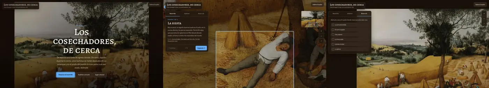
Los cosechadores de Pieter Bruegel el Viejo (1565, The Met) para recorrer de cerca: de lejos es una tarde de agosto dorada; de cerca, un segador duerme la siesta, unos bañistas se meten desnudos en un estanque y en el prado del pueblo le tiran palos a un ave atada. Recorrido de 10 paradas con vuelo de cámara, cada una con su fuente (ficha y audioguía del Met, Patrick Bringley), y un juego de buscar con 6 detalles más. Teselas propias generadas desde la reproducción gigapíxel de Google Art Project, de dominio público.
github.com/pedri77/los-cosechadores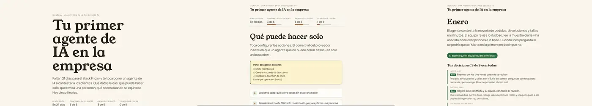
Una historia en la que decides tú cómo poner un agente de IA a contestar a los clientes de una tienda online, a 21 días del Black Friday: qué datos le das, qué puede hacer solo, qué revisa una persona y qué haces cuando se equivoca. 25 escenas, 5 finales y consecuencias que llegan semanas después, cada una apoyada en un caso real (Air Canada y su chatbot, el Chevrolet por 1 dólar, el bot «Sam» de Cursor, DPD, Klarna) y en el AI Act. Al final, el repaso de cada decisión con su porqué; un validador recorre los 6.167 estados posibles.
github.com/pedri77/primer-agente-ia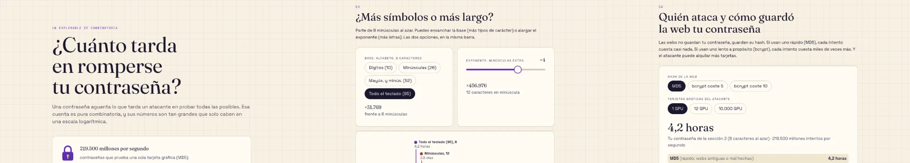
Un explorable de combinatoria con escalas logarítmicas. Primero apuestas cuánto aguanta una contraseña; luego ves por qué cada carácter multiplica, por qué alargarla pesa más que añadir símbolos, por qué el hash que eligió la web (MD5 frente a bcrypt) cuenta tanto como lo que tú escribes y por qué una palabra con trucos cae enseguida frente a una frase Diceware. Velocidades reales de una RTX 5090 con hashcat, 93.111 palabras del DLE con sus variantes y una barra que va de un segundo a la edad del universo.
github.com/pedri77/cuanto-tarda-contrasena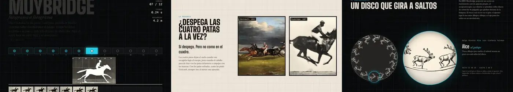
El scroll hace de proyector. Doce cámaras sobre la rejilla negra de Muybridge se disparan al paso de la yegua Sallie Gardner (1878) y dejan su foto en una tira de contactos, con los datos impresos en la tarjeta original. Después, la pregunta de Stanford: el Derby de Géricault frente a la lámina 626 foto a foto (sí despega, pero con las patas recogidas). Seis discos reales del zoopraxiscopio giran a saltos con una ventana ampliada, y una pared viva de láminas cierra con la cronología hasta Duchamp. Todo de dominio público, de Wikimedia Commons.
github.com/pedri77/muybridge-proyectorCervantes cuenta cada aventura dos veces: como la ve don Quijote y como es. Aquí el scroll hace de Sancho. Siete aventuras con los grabados de Doré (1863): primero un recorte de cerca sobre oro con lo que él imagina, y al bajar la cámara se aleja, su palabra se tacha y aparece en añil lo que hay (treinta gigantes, molinos de viento). Después, su libro de cuentas de encantadores, recuentos sobre el texto completo y la última página palabra a palabra. Texto de Project Gutenberg y grabados de dominio público de Wikimedia Commons.
github.com/pedri77/quijote-dore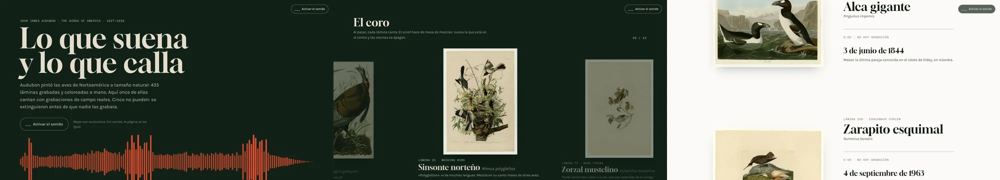
La primera web de la serie con sonido. Doce láminas de The Birds of America (1827-1838) pasan en fila y cantan con grabaciones de campo reales: el scroll hace de mesa de mezclas y suena la que está en el centro. Después, cinco aves que Audubon pintó y nadie llegó a grabar (la paloma migratoria, la cotorra de Carolina, el pato del Labrador, el alca gigante y el zarapito esquimal), cada una con su línea plana, y una cronología hasta la primera grabación de un ave en 1889. Láminas de dominio público y cantos CC BY-SA de xeno-canto vía Wikimedia Commons.
github.com/pedri77/audubon-cantos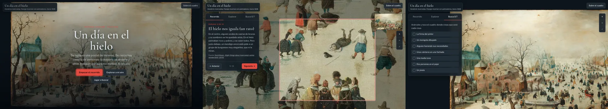
Paisaje invernal con patinadores de Hendrick Avercamp (hacia 1608) para recorrer de cerca: arrastra, acerca con la rueda o el pellizco y la cámara vuela por un recorrido de 10 paradas con lo que de lejos no se ve, del cubo que baja por un agujero en el hielo para hacer cerveza a los que trabajan mientras otros patinan. Después, un juego de buscar con 7 detalles escondidos, la firma del pintor entre ellos. Teselas propias generadas desde la imagen IIIF de dominio público del Rijksmuseum, sin librerías de mapas.
github.com/pedri77/un-dia-en-el-hielo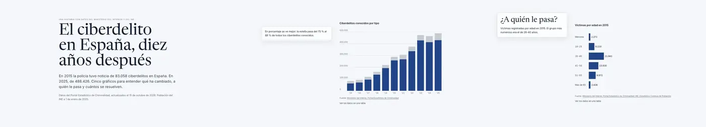
De 83.058 ciberdelitos conocidos en 2015 a 488.426 en 2025: una historia con datos en la que el gráfico se queda fijo y cambia con cada paso. Qué tipos dominan (la estafa pasa del 75 % al 88 %), cuántos se esclarecen, a qué edades afecta y un mapa por provincias por cada 1.000 habitantes. Datos del Portal Estadístico de Criminalidad del Ministerio del Interior y del INE, cada cifra con su procedencia y cada gráfico con su tabla.
github.com/pedri77/ciberdelito-espana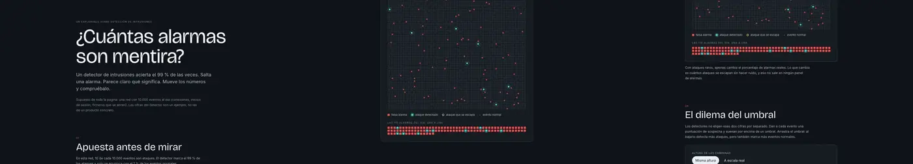
Un explorable sobre la falacia de la tasa base: un detector de intrusiones que acierta el 99 % y, aun así, 9 de cada 10 alarmas son falsas. Primero apuestas, luego lo ves en los 10.000 eventos de un día, mueves la tasa de ataques, de falsos positivos y de detección, arrastras el umbral entre dos campanas y calculas las horas que tu SOC pierde en falsas alarmas. Cada estado se comparte por URL. Basado en Axelsson (2000) y Gigerenzer y Hoffrage (1995).
github.com/pedri77/alarmas-falsas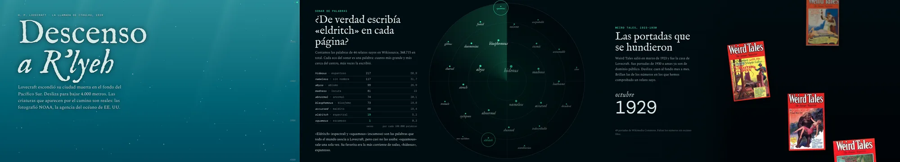
Un descenso de 4.000 metros hasta la ciudad hundida de Lovecraft: el agua se oscurece, los medidores marcan presión y luz, y aparecen criaturas reales fotografiadas por NOAA. Después, un sonar con sus palabras favoritas contadas en 44 relatos (hideous 217 veces, squamous solo una), 49 portadas de Weird Tales de 1923 a 1930 que caen al fondo y el mapa de sus pueblos inventados sobre los reales. Textos de Wikisource, portadas de dominio público de Wikimedia Commons y fotos de NOAA.
github.com/pedri77/lovecraft-abismo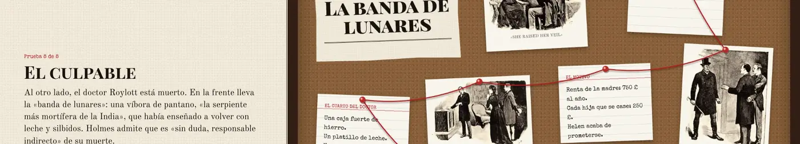
La banda de lunares resuelta en un tablero de corcho: la cámara salta de prueba en prueba con dibujos de Sidney Paget y fichas a máquina mientras un hilo rojo las une hasta el culpable. Después, una primera plana de periódico, un buscador que recorre los 60 casos (662.768 palabras) y demuestra que Holmes nunca dijo «Elementary, my dear Watson», una lupa sobre la gorra que inventó Paget y el archivo de los casos año a año con el hueco de 1894 a 1900. Textos de Project Gutenberg y dibujos de dominio público de Wikimedia Commons.
github.com/pedri77/sherlock-tableroLa novela de Stoker leída por fechas: un taco de calendario se arranca hoja a hoja del 3 de mayo al 6 de noviembre y al lado sale quién escribió ese día y qué. Después, el mapa de Europa con la cámara de parada en parada (Bistritz, el Demeter, Whitby, Londres, Varna y la persecución), los 155 documentos colocados por autor y por día, cuatro mitos que el libro desmiente (la palabra «fangs» no aparece ni una vez) y recuentos sobre el texto completo. Texto de Project Gutenberg, costas de Natural Earth e imágenes de dominio público de Wikimedia Commons.
github.com/pedri77/dracula-diario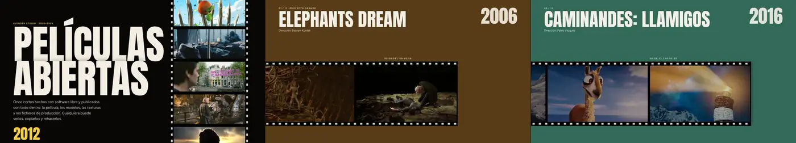
Veinte años de cine abierto del Blender Studio, de Elephants Dream (2006) a Singularity (2026): once cortos hechos con software libre y publicados con todos sus ficheros. Una tira de película corre con el scroll, cada corto ocupa un bloque del color de sus propios fotogramas con su código de tiempo, y se cuenta qué estrenó cada uno. Fotogramas de Wikimedia Commons con la licencia Creative Commons de cada película citada.
github.com/pedri77/peliculas-abiertas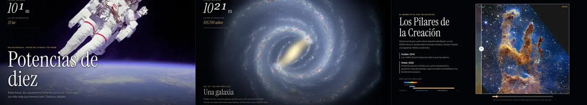
Potencias de diez con fotos reales: de Bruce McCandless flotando junto a la Tierra al primer campo profundo de Webb, con un contador de escala y del tiempo que tarda la luz en cruzarla. Después, los Pilares de la Creación según Hubble y según Webb con un corte que barre la imagen, y cinco sondas (Voyager, Pioneer, New Horizons) saliendo del sistema solar con su distancia calculada en vivo desde JPL Horizons.
github.com/pedri77/atlas-espacial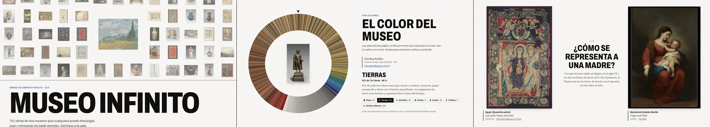
Del trazo a la sala: la cámara empieza pegada a una nube de Van Gogh y se aleja hasta una pared con 150 obras. Después, 741 obras CC0 de The Met y el Cleveland Museum of Art ordenadas por color en un anillo (dos de cada tres salen marrones, y se explica por qué), 5.000 años en una línea con su escala real y una sala de comparación con una obra de cada museo frente a la misma pregunta.
github.com/pedri77/museo-infinito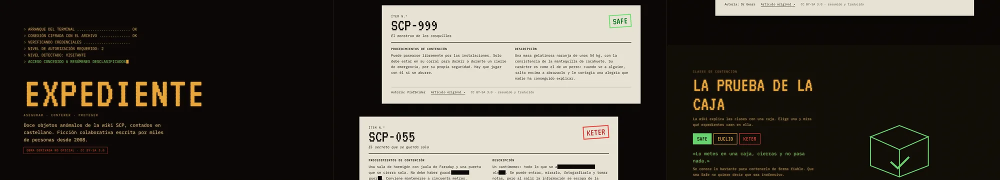
Una terminal ámbar que se teclea con el scroll y abre doce expedientes de la Fundación SCP: hojas de papel con tachones que se retiran mientras lees, la prueba de la caja (Safe, Euclid, Keter) y un registro de incidentes que se escribe solo. Obra derivada no oficial con textos resumidos y traducidos de la SCP Wiki (CC BY-SA 3.0), con la autoría de cada artículo citada y sin imágenes de la wiki.
github.com/pedri77/expediente-scp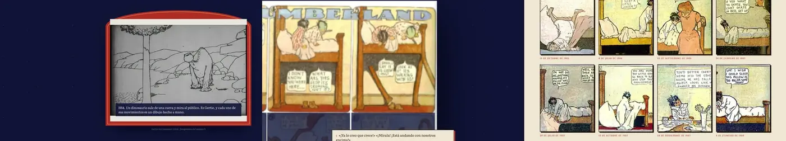
Dibujar sueños: un escenario de vodevil donde Gertie the Dinosaur (1914) sale de su cueva fotograma a fotograma con el scroll; la página de Little Nemo de la cama que camina (1908) leída viñeta a viñeta con una cámara y traducción propia, hasta que Nemo se cae de la cama; y doce despertares con un visor de la página entera con zoom y arrastre. Todo de dominio público, desde Wikimedia Commons.
github.com/pedri77/winsor-mccay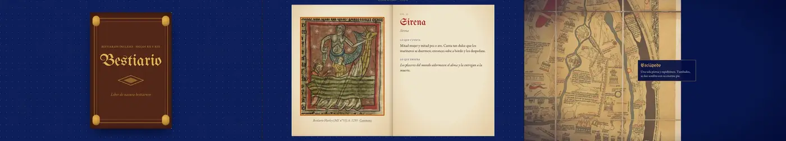
Un códice de los siglos XII y XIII que se abre en 3D y se hojea con el scroll: 25 bestias de los bestiarios de Aberdeen, Rochester y Harley, del unicornio al bonacón, con lo que contaba el libro y lo que enseñaba. Después, una cámara recorre los monstruos del Mappa Mundi de Hereford con etiquetas ancladas, y unas tarjetas comparan lo que se creía con lo que sabemos hoy. Miniaturas de dominio público y textos propios.
github.com/pedri77/bestiario-medieval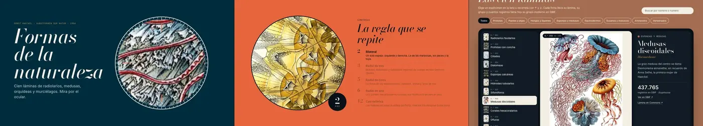
Las 100 láminas de Kunstformen der Natur (1904) de Ernst Haeckel, en dominio público, como una Pokédex. Se entra por el ocular de un microscopio que baja de ×6 a ×1, se recorre el árbol de la vida de 1866 y un caleidoscopio de simetrías, y se llega a un aparato con lista y visor: cada lámina con su nombre, su grupo y los registros de su grupo moderno en GBIF, con teclado, filtros y búsqueda.
github.com/pedri77/haeckel-pokedex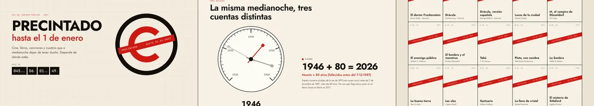
Lo que deja de tener dueño el 1 de enero de 2027 y por qué cada país cuenta con su propio reloj: obras de 1931 en EE. UU., autores muertos en 1956 en Europa y en 1946 en España. Un © precintado que el scroll rompe hasta dejar «PD», una esfera con tres agujas, una estantería de 40 obras con su letra pequeña y una cuenta atrás real hasta la medianoche. Sin imágenes de las obras: hasta esa fecha siguen protegidas.
github.com/pedri77/dominio-publico-2027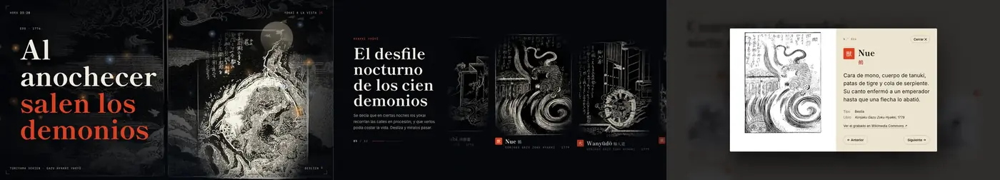
Cae la noche sobre Edo y los grabados de Toriyama Sekien (1776-1784) se encienden como luz: sale la luna, flotan fuegos fatuos y desfilan los cien demonios. Después, un bestiario de 42 yokai sobre papel washi, filtrable por tipo, con ficha de cada criatura, y los tsukumogami, los objetos que cobran alma a los cien años. Todo en dominio público, desde Wikimedia Commons, con textos propios.
github.com/pedri77/bestiario-yokai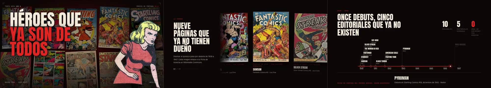
Un quiosco de 1940 en scroll: la tinta se seca, la pared de portadas se enfoca y los superhéroes de la Edad de Oro que nadie renovó salen de las viñetas. Carrete de portadas reales, cronología de once debuts en editoriales que ya no existen, las páginas de Fletcher Hanks en abanico y por qué todo esto es hoy de todos. Datos de Wikidata y Wikipedia, imágenes de Wikimedia Commons con licencia de dominio público, cada una con su crédito.
github.com/pedri77/heroes-dominio-publico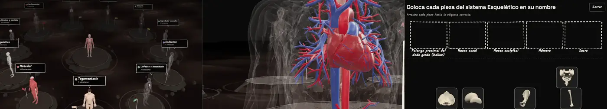
Once islas, una por sistema del cuerpo humano, alrededor de un cuerpo completo en el centro. Sobrevuelas el mar hasta cada isla, giras el sistema aislado dentro de una silueta translúcida y tocas cualquiera de sus 934 estructuras para leer su ficha. Cada isla tiene un reto con física: arrastrar piezas anatómicas reales hasta su nombre. Atlas de Alexis Parrón sobre BodyParts3D (CC BY-SA), en castellano e inglés.
github.com/pedri77/archipielago-cuerpo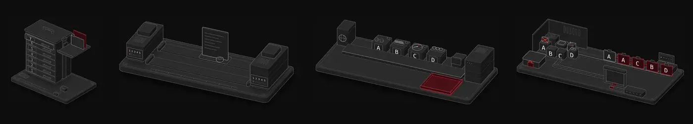
Cuatro figuras isométricas que se manejan con el ratón o el teclado: un archivador de siete cajones donde cada capa OSI añade su cabecera al paquete; el handshake de TLS 1.3 (RFC 8446) con lo que viaja en claro, las claves que cada extremo deriva sin enviarlas y los estuches cifrados; y un WAF como aduana que normaliza, aplica firmas del OWASP CRS, puntúa anomalías y limita la tasa, con SQLi, XSS codificado y un falso positivo; y un EDR en el equipo que manda telemetría a la consola, detecta por comportamiento una cadena ATT&CK, aísla la red y pone en cuarentena el fichero. Parte de la matriz de vulnerabilidades por capa OSI.
github.com/pedri77/vulnerabilidades-capas-osi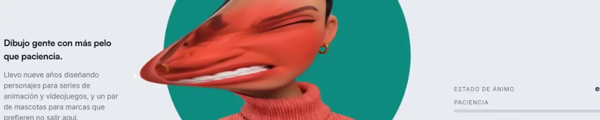
Hero interactivo: agarra la cara de Nora y estírala como un chicle. Malla WebGL2 con muelle y rubor, 14 expresiones generadas con IA y registradas entre sí con un pipeline propio.
github.com/pedri77/personaje-estirable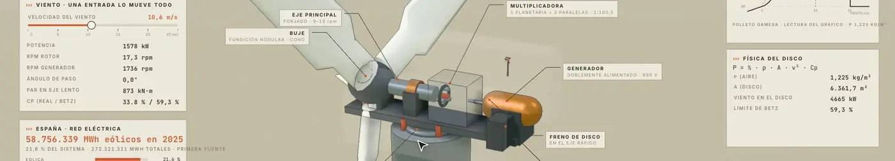
Desmonta un aerogenerador Gamesa G90 en 3D: el viento mueve rotor, paso, multiplicadora y generador con la ficha técnica real, y los paneles leen a diario los datos de Red Eléctrica. La eólica fue la primera fuente de electricidad de España en 2025.
github.com/pedri77/dentro-del-molino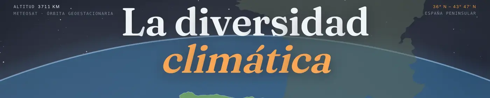
Tema 2 de Geografía de 2.º de Bachillerato convertido en web de scroll: desciendes desde un satélite hasta la Península, los factores del clima se dibujan sobre el mapa y los climogramas reales de 14 estaciones de AEMET se comentan paso a paso, como en la PAU.
github.com/pedri77/diversidad-climatica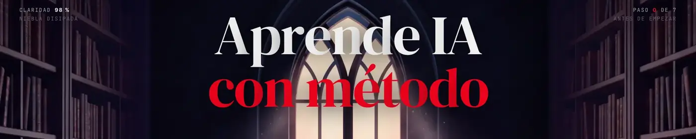
Demo de scroll cinematográfico para IAcademy: una biblioteca a oscuras aparece al disipar la niebla, el robot saluda, el método de 7 pasos se dibuja con el scroll y 24 herramientas de IA encajan en su sitio. Capas por parallax compuestas a partir de un solo render con IA.
github.com/pedri77/iacademy-cinematica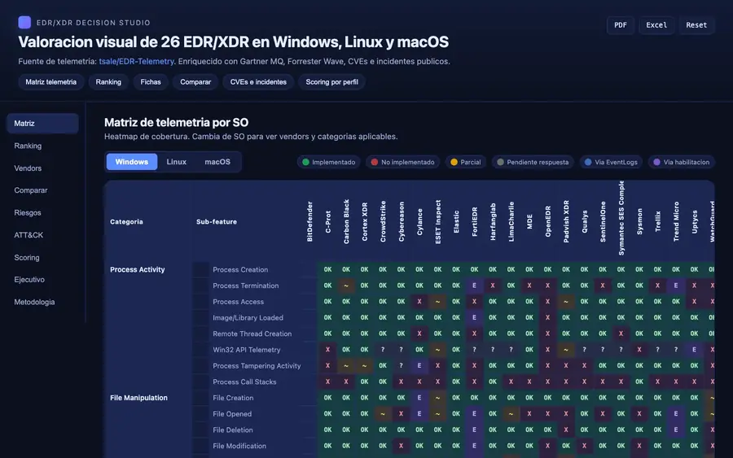
Compara 26 EDR/XDR del mercado en Windows, Linux y macOS: telemetría del proyecto abierto EDR-Telemetry, posición en Gartner y Forrester, CVEs e incidentes públicos. Web estática, sin dependencias.
github.com/pedri77/edr-visual-app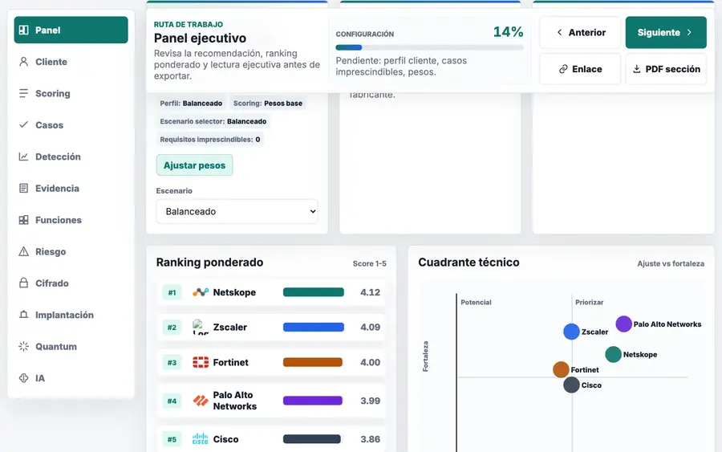
Puntuación visual, matriz de riesgos, seguimiento de CVEs e informe ejecutivo en PDF para comparar los SASE/SSE de Zscaler, Netskope, Palo Alto, Fortinet y Cisco.
github.com/pedri77/sase-visual-app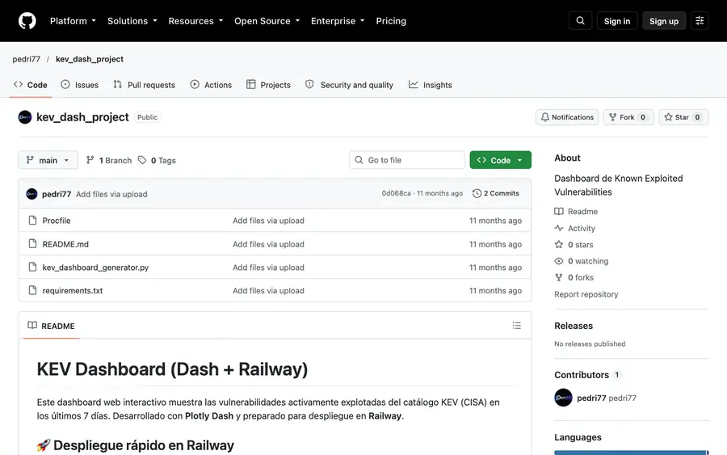
Panel de las vulnerabilidades explotadas activamente del catálogo KEV de CISA en los últimos 7 días, con filtros por fabricante y producto y gráficos por fecha de inclusión.
github.com/pedri77/kev_dash_project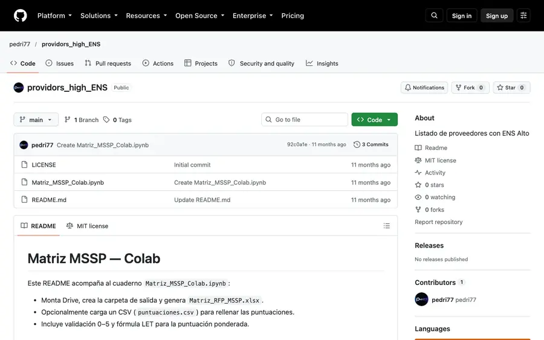
Cuaderno de Google Colab que genera la matriz de evaluación de proveedores MSSP para un pliego: criterios ponderados de 0 a 5, carga de puntuaciones desde CSV y Excel con la nota final.
github.com/pedri77/providors_high_ENSIngesta y normaliza los IOCs de OpenSourceMalware en SQLite, con una API FastAPI para exportar a CSV, STIX y MISP, interfaz en Streamlit y conector para publicar en MISP.
github.com/pedri77/osm-ioc-hubItinerario de estudio en cuatro niveles para unir ciberseguridad e IA: fundamentos de machine learning con Python, IA aplicada al SOC, modelos y RAG en entornos de seguridad, y certificaciones y comunidad.
github.com/pedri77/ruta-ciberseguridad-e-IAAbierto a colaborar
Plataformas de seguridad, automatización con IA y proyectos abiertos. Cuéntame en qué estás trabajando.